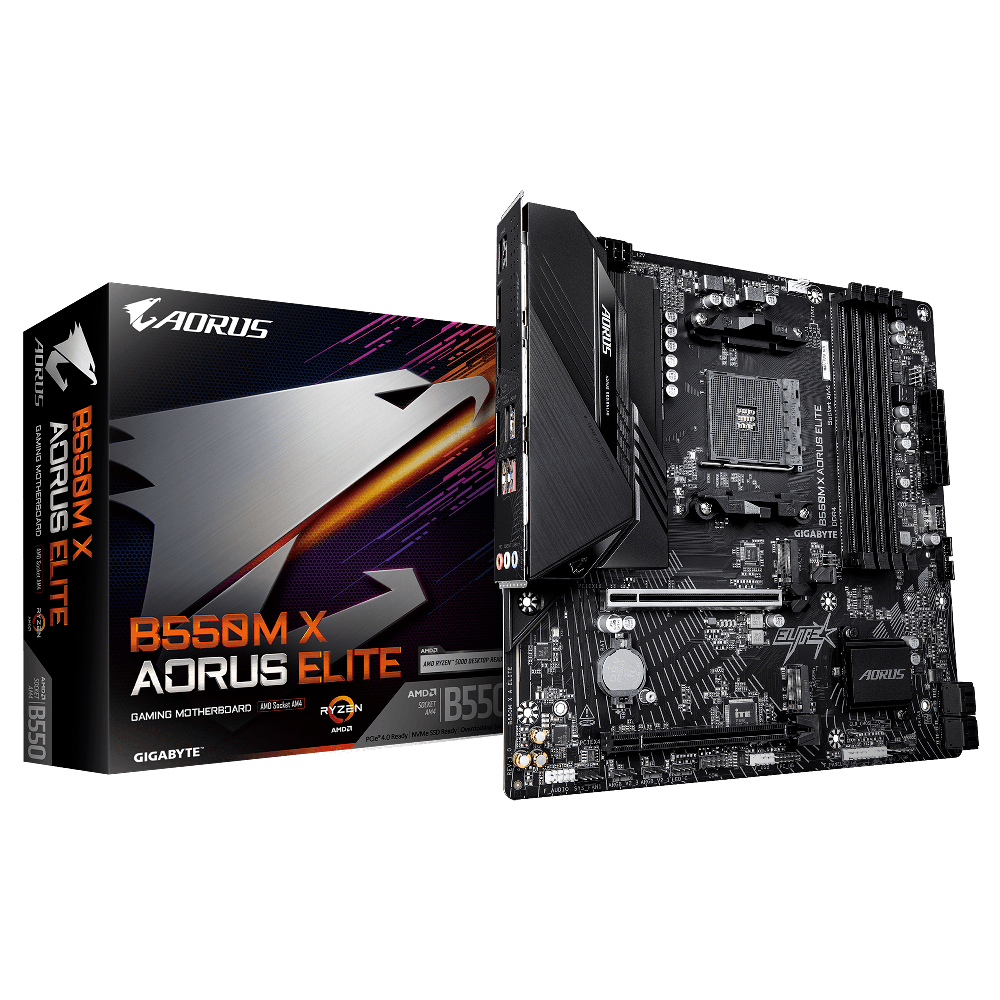

AM4
DDR4A320, B350, B450, B550, X370, X470, X570, A520
Тохирох CPU харах →
Эх хавтан (motherboard) нь CPU, RAM, GPU, SSD болон бусад төхөөрөмжийг хооронд нь холбож, мэдээлэл солилцох боломж олгодог компьютерийн үндсэн плат юм.
Ryzen 5 7600 + MSI B650 TOMAHAWK WIFI + DDR5 RAM нь нэг платформын жишээ юм. Тухайн RAM kit-ийн QVL болон BIOS хувилбарыг нэмж шалгана.
Үгүй. AMD AM5 desktop платформ DDR5 санах ой ашигладаг.
Үгүй. Socket нь CPU-ийн физик холболт, chipset нь эх хавтангийн боломж, холболтод нөлөөлдөг удирдлагын бүрэлдэхүүн юм.
Үгүй. Case нь ATX form factor дэмждэг эсэхийг шалгана.
Болохгүй. Хоёр стандартын slot болон pin байрлал өөр.
Эх хавтан сонгох үндсэн лавлах. CPU үе болон BIOS хувилбарын дэмжлэгийг тусад нь шалгана.
A320, B350, B450, B550, X370, X470, X570, A520
Тохирох CPU харах →A620, B650, B650E, X670, X670E, B840, B850, X870, X870E
Тохирох CPU харах →H610, B660, B760, H670, H770, Z690, Z790
Тохирох CPU харах →H810, B860, Z890
Тохирох CPU харах →